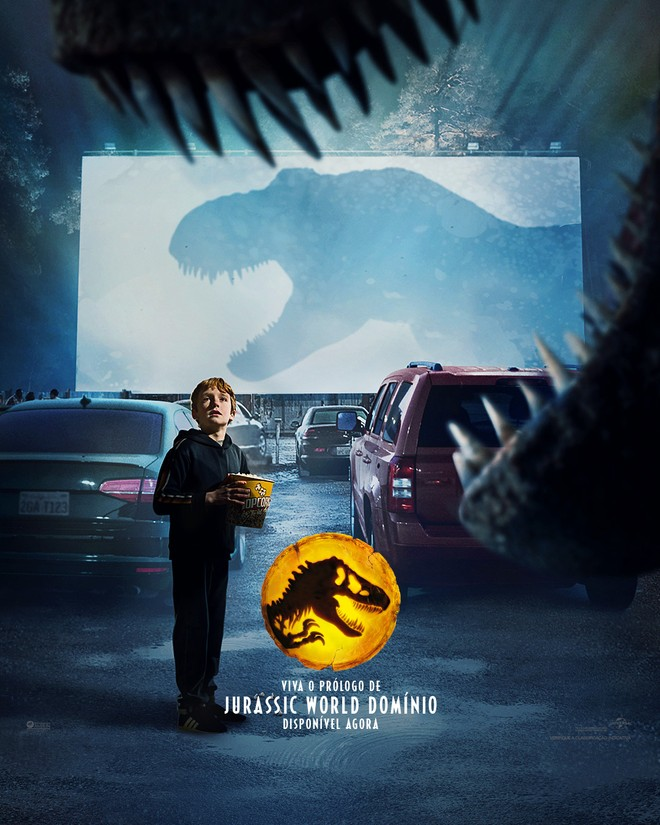

Lugares que voce tem que conhecer
Bolivia
Visitei em 2021 nas ferias
Crítica de Filmes
Jurassic World Dominiom

Excelente filme para completar a história de jurassic park
AMEI!!!!, Um otimo final para a franquia de jurassic , fiquei com calafrios e um friozinho na barriga recomendo muito esse filme
MARIO WARFARE-THE COMPLETE SAGA

Excelente filme, da uma boa teoria sobre o inicio do jogo Super mario
AMEI!!!!, Só da para assistir no youtube, da uma explicaçao sobre o surgimento do jogo super mario. Tem varias referencias tipo o kirby,link,peach,donk kong,etc